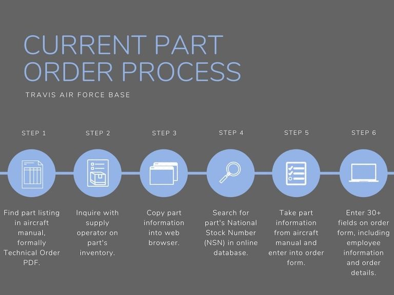

Flight Line of the Future
During Summer 2020, I had the opportunity to work on this project centered around streamlining aircraft maintenance for Travis Air Force Base.
I worked alongside Bernard Chan, with TSgt. Evan Strahan and SSgt. Max Estrada as our program leads.
Problem Statement
Presently, the first steps of the maintenance process at Travis Air Force Base begin with identifying the malfunctioning part
on the flight line, and subsequently putting in an order for that part. The current method of ordering a part uses a multitude of platforms and requires inquiry requests
to different departments before a formal supply order can be submitted. This process can be unwieldy and there is room for improvement to make it more efficient.
The goal with this project is to automate this complicated process to make it faster and easier for maintenance professionals to order new parts.
For a detailed demonstration of the current part ordering process, view our problem statement video.
Research
To better understand the necessary components to the part ordering process, and what mechanisms can be made more efficient,
my partner and I delved into the steps a maintenance operator follows to order a part. After conducing our research, we found
that it could take anywhere from 30 minutes to an hour to order a single part, from start to finish.
By studying aircraft manuals, or more formally, Technical Orders, understanding the use of National Stock Numbers, recreating
a mock warehouse inventory, and finally dissecting the F9006 part order form, our research gave us a solid foundation for our project.

GitHub Repository
Java Documentation